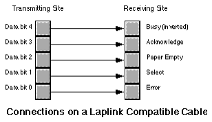

|
Table of Content | |
|
Table of Content | |
| CHAPTER TWENTY ONE: THE PC PARALLEL PORTS (Part 3) |
| 21.4 - Inter-Computer Communications on the Parallel Port |
| 21.4 Inter-Computer Communications on the Parallel Port |
Although printing is, by far, the most popular use for the parallel port on a PC, many devices use the parallel port for other purposes, as mentioned earlier. It would not be fitting to close this chapter without at least one example of a non-printer application for the parallel port. This section will describe how to get two computers to transmit files from one to the other across the parallel port.
The Laplink' program from Travelling Software is a good example of a commercial product that can transfer data across the PC's parallel port; although the following software is not as robust or feature laden as Laplink, it does demonstrate the basic principles behind such software.
Note that you cannot connect two computer's parallel ports with a simple cable that has DB25 connectors at each end. In fact, doing so could damage the computers' parallel ports because you'd be connecting digital outputs to digital outputs (a real no-no). However, you purchase "Laplink compatible" cables (or buy real Laplink cables for that matter) the provide proper connections between the parallel ports of two computers. As you may recall from the section on the parallel port hardware, the unidirectional parallel port provides five input signals. A Laplink cable routes four of the data lines to four of these input lines in both directions. The connections on a Laplink compatible cable are as follows:

Data written on bits zero through three of the data register at the transmitting site appear, unchanged, on bits three through six of the status port on the receiving site. Bit four of the transmitting site appears, inverted, at bit seven of the receiving site. Note that Laplink compatible cables are bidirectional. That is, you can transmit data from either site to the other using the connections above. However, since there are only five input bits on the parallel port, you must transfer the data four bits at a time (we need one bit for the data strobe). Since the receiving site needs to acknowledge data transmissions, we cannot simultaneously transmit data in both directions. We must use one of the output lines at the site receiving data to acknowledge the incoming data.
Since the two sites cooperating in a data transfer across the parallel cable must take turns transmitting and receiving data, we must develop a protocol so each participant in the data transfer knows when it is okay to transmit and receive. Our protocol will be very simple - a site is either a transmitter or a receiver, the roles will never switch. Designing a more complex protocol is not difficult, but this simple protocol will suffice for the example you are about to see. Later in this section we will discuss ways to develop a protocol that allows two-way transmissions.
The following example programs will transmit and receive a single file across the parallel port. To use this software, you run the transmit program on the transmitting site and the receive program on the receiving site. The transmission program fetches a file name from the DOS command line and opens that file for reading (generating an error, and quitting, if the file does not exist). Assuming the file exists, the transmit program then queries the receiving site to see if it is available. The transmitter checks for the presence of the receiving site by alternately writing zeros and ones to all output bits then reading its input bits. The receiving site will invert these values and write them back when it comes on-line. Note that the order of execution (transmitter first or receiver first) does not matter. The two programs will attempt to handshake until the other comes on line.When both sites cycle through the inverting values three times, they write the value 05h to their output ports to tell the other site they are ready to proceed. A time-out function aborts either program if the other site does not respond in a reasonable amount of time.
Once the two sites are synchronized, the transmitting site determines the size of the file and then transmits the file name and size to the receiving site. The receiving site then begins waiting for the receipt of data.
The transmitting site sends the data 512 bytes at a time to the receiving site. After the transmission of 512 bytes, the receiving site delays sending an acknowledgment and writes the 512 bytes of data to the disk. Then the receiving site sends the acknowledge and the transmitting site begins sending the next 512 bytes. This process repeats until the receiving site has accepted all the bytes from the file.
Here is the code for the transmitter:
; TRANSMIT.ASM
;
; This program is the transmitter portion of the programs that transmit files
; across a Laplink compatible parallel cable.
;
; This program assumes that the user want to use LPT1: for transmission.
; Adjust the equates, or read the port from the command line if this
; is inappropriate.
.286
.xlist
include stdlib.a
includelib stdlib.lib
.list
dseg segment para public 'data'
TimeOutConst equ 4000 ;About 1 min on 66Mhz 486.
PrtrBase equ 10 ;Offset to LPT1: adrs.
MyPortAdrs word ? ;Holds printer port address.
FileHandle word ? ;Handle for output file.
FileBuffer byte 512 dup (?) ;Buffer for incoming data.
FileSize dword ? ;Size of incoming file.
FileNamePtr dword ? ;Holds ptr to filename
dseg ends
cseg segment para public 'code'
assume cs:cseg, ds:dseg
; TestAbort- Check to see if the user has pressed ctrl-C and wants to
; abort this program. This routine calls BIOS to see if the
; user has pressed a key. If so, it calls DOS to read the
; key (function AH=8, read a key w/o echo and with ctrl-C
; checking).
TestAbort proc near
push ax
push cx
push dx
mov ah, 1
int 16h ;See if keypress.
je NoKeyPress ;Return if no keypress.
mov ah, 8 ;Read char, chk for ctrl-C.
int 21h ;DOS aborts if ctrl-C.
NoKeyPress: pop dx
pop cx
pop ax
ret
TestAbort endp
; SendByte- Transmit the byte in AL to the receiving site four bits
; at a time.
SendByte proc near
push cx
push dx
mov ah, al ;Save byte to xmit.
mov dx, MyPortAdrs ;Base address of LPT1: port.
; First, just to be sure, write a zero to bit #4. This reads as a one
; in the busy bit of the receiver.
mov al, 0
out dx, al ;Data not ready yet.
; Wait until the receiver is not busy. The receiver will write a zero
; to bit #4 of its data register while it is busy. This comes out as a
; one in our busy bit (bit 7 of the status register). This loop waits
; until the receiver tells us its ready to receive data by writing a
; one to bit #4 (which we read as a zero). Note that we check for a
; ctrl-C every so often in the event the user wants to abort the
; transmission.
inc dx ;Point at status register.
W4NBLp: mov cx, 10000
Wait4NotBusy: in al, dx ;Read status register value.
test al, 80h ;Bit 7 = 1 if busy.
loopne Wait4NotBusy ;Repeat while busy, 10000 times.
je ItsNotbusy ;Leave loop if not busy.
call TestAbort ;Check for Ctrl-C.
jmp W4NBLp
; Okay, put the data on the data lines:
ItsNotBusy: dec dx ;Point at data register.
mov al, ah ;Get a copy of the data.
and al, 0Fh ;Strip out H.O. nibble
out dx, al ;"Prime" data lines, data not avail.
jmp $+2 ;Short delay to allow the data time
jmp $+2 ; to stablize on the data lines.
or al, 10h ;Turn data available on.
out dx, al ;Send data w/data available strobe.
; Wait for the acknowledge from the receiving site. Every now and then
; check for a ctrl-C so the user can abort the transmission program from
; within this loop.
inc dx ;Point at status register.
W4ALp: mov cx, 10000 ;Times to loop between ctrl-C checks.
Wait4Ack: in al, dx ;Read status port.
test al, 80h ;Ack = 1 when rcvr acknowledges.
loope Wait4Ack ;Repeat 10000 times or until ack.
jne GotAck ;Branch if we got an ack.
call TestAbort ;Every 10000 calls, check for a
jmp W4ALp ; ctrl-C from the user.
; Send the data not available signal to the receiver:
GotAck: dec dx ;Point at data register.
mov al, 0 ;Write a zero to bit 4, this appears
out dx, al ; as a one in the rcvr's busy bit.
; Okay, on to the H.O. nibble:
inc dx ;Point at status register.
W4NB2: mov cx, 10000 ;10000 calls between ctrl-C checks.
Wait4NotBusy2: in al, dx ;Read status register.
test al, 80h ;Bit 7 = 1 if busy.
loopne Wait4NotBusy2 ;Loop 10000 times while busy.
je NotBusy2 ;H.O. bit clear (not busy)?
call TestAbort ;Check for ctrl-C.
jmp W4NB2
; Okay, put the data on the data lines:
NotBusy2: dec dx ;Point at data register.
mov al, ah ;Retrieve data to get H.O. nibble.
shr al, 4 ;Move H.O. nibble to L.O. nibble.
out dx, al ;"Prime" data lines.
or al, 10h ;Data + data available strobe.
out dx, al ;Send data w/data available strobe.
; Wait for the acknowledge from the receiving site:
inc dx ;Point at status register.
W4A2Lp: mov cx, 10000
Wait4Ack2: in al, dx ;Read status port.
test al, 80h ;Ack = 1
loope Wait4Ack2 ;While while no acknowledge
jne GotAck2 ;H.O. bit = 1 (ack)?
call TestAbort ;Check for ctrl-C
jmp W4A2Lp
; Send the data not available signal to the receiver:
GotAck2: dec dx ;Point at data register.
mov al, 0 ;Output a zero to bit #4 (that
out dx, al ; becomes busy=1 at rcvr).
mov al, ah ;Restore original data in AL.
pop dx
pop cx
ret
SendByte endp
; Synchronization routines:
;
; Send0s- Transmits a zero to the receiver site and then waits to
; see if it gets a set of ones back. Returns carry set if
; this works, returns carry clear if we do not get a set of
; ones back in a reasonable amount of time.
Send0s proc near
push cx
push dx
mov dx, MyPortAdrs
mov al, 0 ;Write the initial zero
out dx, al ; value to our output port.
xor cx, cx ;Checks for ones 10000 times.
Wait41s: inc dx ;Point at status port.
in al, dx ;Read status port.
dec dx ;Point back at data port.
and al, 78h ;Mask input bits.
cmp al, 78h ;All ones yet?
loopne Wait41s
je Got1s ;Branch if success.
clc ;Return failure.
pop dx
pop cx
ret
Got1s: stc ;Return success.
pop dx
pop cx
ret
Send0s endp
; Send1s- Transmits all ones to the receiver site and then waits to
; see if it gets a set of zeros back. Returns carry set if
; this works, returns carry clear if we do not get a set of
; zeros back in a reasonable amount of time.
Send1s proc near
push cx
push dx
mov dx, MyPortAdrs ;LPT1: base address.
mov al, 0Fh ;Write the "all ones"
out dx, al ; value to our output port.
mov cx, 0
Wait40s: inc dx ;Point at input port.
in al, dx ;Read the status port.
dec dx ;Point back at data port.
and al, 78h ;Mask input bits.
loopne Wait40s ;Loop until we get zero back.
je Got0s ;All zeros? If so, branch.
clc ;Return failure.
pop dx
pop cx
ret
Got0s: stc ;Return success.
pop dx
pop cx
ret
Send1s endp
; Synchronize- This procedure slowly writes all zeros and all ones to its
; output port and checks the input status port to see if the
; receiver site has synchronized. When the receiver site
; is synchronized, it will write the value 05h to its output
; port. So when this site sees the value 05h on its input
; port, both sites are synchronized. Returns with the
; carry flag set if this operation is successful, clear if
; unsuccessful.
Synchronize proc near
print
byte "Synchronizing with receiver program"
byte cr,lf,0
mov dx, MyPortAdrs
mov cx, TimeOutConst ;Time out delay.
SyncLoop: call Send0s ;Send zero bits, wait for
jc Got1s ; ones (carry set=got ones).
; If we didn't get what we wanted, write some ones at this point and see
; if we're out of phase with the receiving site.
Retry0: call Send1s ;Send ones, wait for zeros.
jc SyncLoop ;Carry set = got zeros.
; Well, we didn't get any response yet, see if the user has pressed ctrl-C
; to abort this program.
DoRetry: call TestAbort
; Okay, the receiving site has yet to respond. Go back and try this again.
loop SyncLoop
; If we've timed out, print an error message and return with the carry
; flag clear (to denote a timeout error).
print
byte "Transmit: Timeout error waiting for receiver"
byte cr,lf,0
clc
ret
; Okay, we wrote some zeros and we got some ones. Let's write some ones
; and see if we get some zeros. If not, retry the loop.
Got1s:
call Send1s ;Send one bits, wait for
jnc DoRetry ; zeros (carry set=got zeros).
; Well, we seem to be synchronized. Just to be sure, let's play this out
; one more time.
call Send0s ;Send zeros, wait for ones.
jnc Retry0
call Send1s ;Send ones, wait for zeros.
jnc DoRetry
; We're syncronized. Let's send out the 05h value to the receiving
; site to let it know everything is cool:
mov al, 05h ;Send signal to receiver to
out dx, al ; tell it we're sync'd.
xor cx, cx ;Long delay to give the rcvr
FinalDelay: loop FinalDelay ; time to prepare.
print
byte "Synchronized with receiving site"
byte cr,lf,0
stc
ret
Synchronize endp
; File I/O routines:
;
; GetFileInfo- Opens the user specified file and passes along the file
; name and file size to the receiving site. Returns the
; carry flag set if this operation is successful, clear if
; unsuccessful.
GetFileInfo proc near
; Get the filename from the DOS command line:
mov ax, 1
argv
mov word ptr FileNamePtr, di
mov word ptr FileNamePtr+2, es
printf
byte "Opening %^s\n",0
dword FileNamePtr
; Open the file:
push ds
mov ax, 3D00h ;Open for reading.
lds dx, FileNamePtr
int 21h
pop ds
jc BadFile
mov FileHandle, ax
; Compute the size of the file (do this by seeking to the last position
; in the file and using the return position as the file length):
mov bx, ax ;Need handle in BX.
mov ax, 4202h ;Seek to end of file.
xor cx, cx ;Seek to position zero
xor dx, dx ; from the end of file.
int 21h
jc BadFile
mov word ptr FileSize, ax ;Save file length
mov word ptr FileSize+2, dx
; Need to rewind file back to the beginning (seek to position zero):
mov bx, FileHandle ;Need handle in BX.
mov ax, 4200h ;Seek to beginning of file.
xor cx, cx ;Seek to position zero
xor dx, dx
int 21h
jc BadFile
; Okay, transmit the good stuff over to the receiving site:
mov al, byte ptr FileSize ;Send the file
call SendByte ; size over.
mov al, byte ptr FileSize+1
call SendByte
mov al, byte ptr FileSize+2
call SendByte
mov al, byte ptr FileSize+3
call SendByte
les bx, FileNamePtr ;Send the characters
SendName: mov al, es:[bx] ; in the filename to
call SendByte ; the receiver until
inc bx ; we hit a zero byte.
cmp al, 0
jne SendName
stc ;Return success.
ret
BadFile: print
byte "Error transmitting file information:",0
puti
putcr
clc
ret
GetFileInfo endp
; GetFileData- This procedure reads the data from the file and transmits
; it to the receiver a byte at a time.
GetFileData proc near
mov ah, 3Fh ;DOS read opcode.
mov cx, 512 ;Read 512 bytes at a time.
mov bx, FileHandle ;File to read from.
lea dx, FileBuffer ;Buffer to hold data.
int 21h ;Read the data
jc GFDError ;Quit if error reading data.
mov cx, ax ;Save # of bytes actually read.
jcxz GFDDone ; quit if at EOF.
lea bx, FileBuffer ;Send the bytes in the file
XmitLoop: mov al, [bx] ; buffer over to the rcvr
call SendByte ; one at a time.
inc bx
loop XmitLoop
jmp GetFileData ;Read rest of file.
GFDError: print
byte "DOS error #",0
puti
print
byte " while reading file",cr,lf,0
GFDDone: ret
GetFileData endp
; Okay, here's the main program that controls everything.
Main proc
mov ax, dseg
mov ds, ax
meminit
; First, get the address of LPT1: from the BIOS variables area.
mov ax, 40h
mov es, ax
mov ax, es:[PrtrBase]
mov MyPortAdrs, ax
; See if we have a filename parameter:
argc
cmp cx, 1
je GotName
print
byte "Usage: transmit <filename>",cr,lf,0
jmp Quit
GotName: call Synchronize ;Wait for the transmitter program.
jnc Quit
call GetFileInfo ;Get file name and size.
jnc Quit
call GetFileData ;Get the file's data.
Quit: ExitPgm ;DOS macro to quit program.
Main endp
cseg ends
sseg segment para stack 'stack'
stk byte 1024 dup ("stack ")
sseg ends
zzzzzzseg segment para public 'zzzzzz'
LastBytes byte 16 dup (?)
zzzzzzseg ends
end Main
Here is the receiver program that accepts and stores away the data sent by the program above:
; RECEIVE.ASM
;
; This program is the receiver portion of the programs that transmit files
; across a Laplink compatible parallel cable.
;
; This program assumes that the user want to use LPT1: for transmission.
; Adjust the equates, or read the port from the command line if this
; is inappropriate.
.286
.xlist
include stdlib.a
includelib stdlib.lib
.list
dseg segment para public 'data'
TimeOutConst equ 100 ;About 1 min on 66Mhz 486.
PrtrBase equ 8 ;Offset to LPT1: adrs.
MyPortAdrs word ? ;Holds printer port address.
FileHandle word ? ;Handle for output file.
FileBuffer byte 512 dup (?) ;Buffer for incoming data.
FileSize dword ? ;Size of incoming file.
FileName byte 128 dup (0) ;Holds filename
dseg ends
cseg segment para public 'code'
assume cs:cseg, ds:dseg
; TestAbort- Reads the keyboard and gives the user the opportunity to
; hit the ctrl-C key.
TestAbort proc near
push ax
mov ah, 1
int 16h ;See if keypress.
je NoKeypress
mov ah, 8 ;Read char, chk for ctrl-C
int 21h
NoKeyPress: pop ax
ret
TestAbort endp
; GetByte- Reads a single byte from the parallel port (four bits at
; at time). Returns the byte in AL.
GetByte proc near
push cx
push dx
; Receive the L.O. Nibble.
mov dx, MyPortAdrs
mov al, 10h ;Signal not busy.
out dx, al
inc dx ;Point at status port
W4DLp: mov cx, 10000
Wait4Data: in al, dx ;See if data available.
test al, 80h ; (bit 7=0 if data available).
loopne Wait4Data
je DataIsAvail ;Is data available?
call TestAbort ;If not, check for ctrl-C.
jmp W4DLp
DataIsAvail: shr al, 3 ;Save this four bit package
and al, 0Fh ; (This is the L.O. nibble
mov ah, al ; for our byte).
dec dx ;Point at data register.
mov al, 0 ;Signal data taken.
out dx, al
inc dx ;Point at status register.
W4ALp: mov cx, 10000
Wait4Ack: in al, dx ;Wait for transmitter to
test al, 80h ; retract data available.
loope Wait4Ack ;Loop until data not avail.
jne NextNibble ;Branch if data not avail.
call TestAbort ;Let user hit ctrl-C.
jmp W4ALp
; Receive the H.O. nibble:
NextNibble: dec dx ;Point at data register.
mov al, 10h ;Signal not busy
out dx, al
inc dx ;Point at status port
W4D2Lp: mov cx, 10000
Wait4Data2: in al, dx ;See if data available.
test al, 80h ; (bit 7=0 if data available).
loopne Wait4Data2 ;Loop until data available.
je DataAvail2 ;Branch if data available.
call TestAbort ;Check for ctrl-C.
jmp W4D2Lp
DataAvail2: shl al, 1 ;Merge this H.O. nibble
and al, 0F0h ; with the existing L.O.
or ah, al ; nibble.
dec dx ;Point at data register.
mov al, 0 ;Signal data taken.
out dx, al
inc dx ;Point at status register.
W4A2Lp: mov cx, 10000
Wait4Ack2: in al, dx ;Wait for transmitter to
test al, 80h ; retract data available.
loope Wait4Ack2 ;Wait for data not available.
jne ReturnData ;Branch if ack.
call TestAbort ;Check for ctrl-C
jmp W4A2Lp
ReturnData: mov al, ah ;Put data in al.
pop dx
pop cx
ret
GetByte endp
; Synchronize- This procedure waits until it sees all zeros on the input
; bits we receive from the transmiting site. Once it receives
; all zeros, it writes all ones to the output port. When
; all ones come back, it writes all zeros. It repeats this
; process until the transmiting site writes the value 05h.
Synchronize proc near
print
byte "Synchronizing with transmitter program"
byte cr,lf,0
mov dx, MyPortAdrs
mov al, 0 ;Initialize our output port
out dx, al ; to prevent confusion.
mov bx, TimeOutConst ;Time out condition.
SyncLoop: mov cx, 0 ;For time out purposes.
SyncLoop0: inc dx ;Point at input port.
in al, dx ;Read our input bits.
dec dx
and al, 78h ;Keep only the data bits.
cmp al, 78h ;Check for all ones.
je Got1s ;Branch if all ones.
cmp al, 0 ;See if all zeros.
loopne SyncLoop0
; Since we just saw a zero, write all ones to the output port.
mov al, 0FFh ;Write all ones
out dx, al
; Now wait for all ones to arrive from the transmiting site.
SyncLoop1: inc dx ;Point at status register.
in al, dx ;Read status port.
dec dx ;Point back at data register.
and al, 78h ;Keep only the data bits.
cmp al, 78h ;Are they all ones?
loopne SyncLoop1 ;Repeat while not ones.
je Got1s ;Branch if got ones.
; If we've timed out, check to see if the user has pressed ctrl-C to
; abort.
call TestAbort ;Check for ctrl-C.
dec bx ;See if we've timed out.
jne SyncLoop ;Repeat if time-out.
print
byte "Receive: connection timed out during synchronization"
byte cr,lf,0
clc ;Signal time-out.
ret
; Jump down here once we've seen both a zero and a one. Send the two
; in combinations until we get a 05h from the transmiting site or the
; user presses Ctrl-C.
Got1s: inc dx ;Point at status register.
in al, dx ;Just copy whatever appears
dec dx ; in our input port to the
shr al, 3 ; output port until the
and al, 0Fh ; transmiting site sends
cmp al, 05h ; us the value 05h
je Synchronized
not al ;Keep inverting what we get
out dx, al ; and send it to xmitter.
call TestAbort ;Check for CTRL-C here.
jmp Got1s
; Okay, we're synchronized. Return to the caller.
Synchronized:
and al, 0Fh ;Make sure busy bit is one
out dx, al ; (bit 4=0 for busy=1).
print
byte "Synchronized with transmiting site"
byte cr,lf,0
stc
ret
Synchronize endp
; GetFileInfo- The transmitting program sends us the file length and a
; zero terminated filename. Get that data here.
GetFileInfo proc near
mov dx, MyPortAdrs
mov al, 10h ;Set busy bit to zero.
out dx, al ;Tell xmit pgm, we're ready.
; First four bytes contain the filesize:
call GetByte
mov byte ptr FileSize, al
call GetByte
mov byte ptr FileSize+1, al
call GetByte
mov byte ptr FileSize+2, al
call GetByte
mov byte ptr FileSize+3, al
; The next n bytes (up to a zero terminating byte) contain the filename:
mov bx, 0
GetFileName: call GetByte
mov FileName[bx], al
call TestAbort
inc bx
cmp al, 0
jne GetFileName
ret
GetFileInfo endp
; GetFileData- Receives the file data from the transmitting site
; and writes it to the output file.
GetFileData proc near
; First, see if we have more than 512 bytes left to go
cmp word ptr FileSize+2, 0 ;If H.O. word is not
jne MoreThan512 ; zero, more than 512.
cmp word ptr FileSize, 512 ;If H.O. is zero, just
jbe LastBlock ; check L.O. word.
; We've got more than 512 bytes left to go in this file, read 512 bytes
; at this point.
MoreThan512: mov cx, 512 ;Receive 512 bytes
lea bx, FileBuffer ; from the xmitter.
ReadLoop: call GetByte ;Read a byte.
mov [bx], al ;Save the byte away.
inc bx ;Move on to next
loop ReadLoop ; buffer element.
; Okay, write the data to the file:
mov ah, 40h ;DOS write opcode.
mov bx, FileHandle ;Write to this file.
mov cx, 512 ;Write 512 bytes.
lea dx, Filebuffer ;From this address.
int 21h
jc BadWrite ;Quit if error.
; Decrement the file size by 512 bytes:
sub word ptr FileSize, 512 ;32-bit subtraction
sbb word ptr FileSize, 0 ; of 512.
jmp GetFileData
; Process the last block, that contains 1..511 bytes, here.
LastBlock:
mov cx, word ptr FileSize ;Receive the last
lea bx, FileBuffer ; 1..511 bytes from
ReadLB: call GetByte ; the transmitter.
mov [bx], al
inc bx
loop ReadLB
mov ah, 40h ;Write the last block
mov bx, FileHandle ; of bytes to the
mov cx, word ptr FileSize ; file.
lea dx, Filebuffer
int 21h
jnc Closefile
BadWrite: print
byte "DOS error #",0
puti
print
byte " while writing data.",cr,lf,0
; Close the file here.
CloseFile: mov bx, FileHandle ;Close this file.
mov ah, 3Eh ;DOS close opcode.
int 21h
ret
GetFileData endp
; Here's the main program that gets the whole ball rolling.
Main proc
mov ax, dseg
mov ds, ax
meminit
; First, get the address of LPT1: from the BIOS variables area.
mov ax, 40h ;Point at BIOS variable segment.
mov es, ax
mov ax, es:[PrtrBase]
mov MyPortAdrs, ax
call Synchronize ;Wait for the transmitter program.
jnc Quit
call GetFileInfo ;Get file name and size.
printf
byte "Filename: %s\nFile size: %ld\n",0
dword Filename, FileSize
mov ah, 3Ch ;Create file.
mov cx, 0 ;Standard attributes
lea dx, Filename
int 21h
jnc GoodOpen
print
byte "Error opening file",cr,lf,0
jmp Quit
GoodOpen: mov FileHandle, ax
call GetFileData ;Get the file's data.
Quit: ExitPgm ;DOS macro to quit program.
Main endp
cseg ends
sseg segment para stack 'stack'
stk byte 1024 dup ("stack ")
sseg ends
zzzzzzseg segment para public 'zzzzzz'
LastBytes byte 16 dup (?)
zzzzzzseg ends
end Main
Chapter Twenty Two: The PC Parralel
Ports (Part 3)
30 SEP 1996